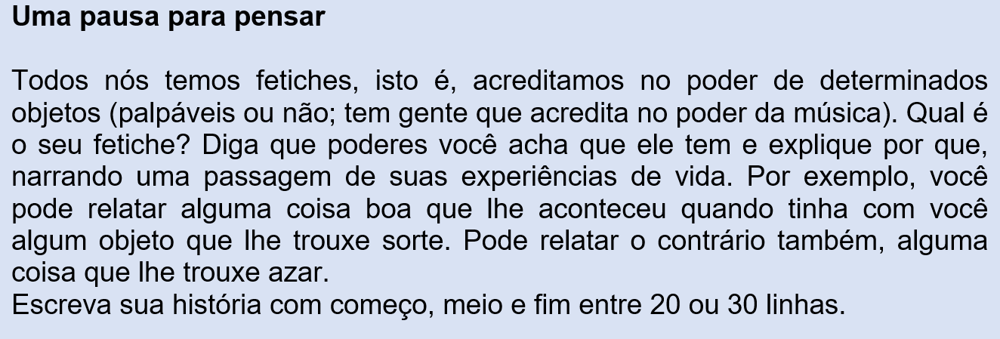

CAPÍTULO 2 – O COMPORTAMENTO HUMANO E A INDÚSTRIA CALÇADISTA
Questão-problema:
Os estudiosos do comportamento humano associam a indústria calçadista ao maior fetiche feminino e masculino: os sapatos de salto alto! Você sabe o que é fetiche?
O fetiche e os sapatos de salto
De origem francesa, fétiche é sinônimo de feitiço. Fetiche, portanto, pode estar relacionado a qualquer objeto (inclusive há pessoas que servem de fetiche a outras!): a pessoa que usa um fetiche acredita que ele lhe dá poderes mágicos ou sobrenaturais. Um fetiche pode ser representado também por um amuleto de proteção. Por exemplo, as fitas do Senhor do Bonfim que são amarradas nos pulsos ou penduradas no espelho do carro são fetiches inofensivos de boa sorte. No episódio bíblico em que Moisés sobe o Monte Sinai para se encontrar com Deus, o povo – enquanto o esperava – foi juntando ouro para criar a estátua de um bezerro e depois adorá-lo. Neste caso, o bezerro de ouro pode ser classificado como um objeto de fetiche (e, na História, criticado por Moisés). No âmbito da psicologia, o fetiche tem conotação sexual, representando um comportamento específico que encontra prazer em certas atividades, objetos ou partes do corpo. Um dos fetiches mais comuns é o fetiche por pés, conhecido como podolatria (adoração pelos pés). Há uma expressão, atribuída a Karl Marx, que é o “fetichismo da mercadoria”, conceito do sistema econômico criado pelo filósofo e economista alemão. Marx indica que, graças a esse fenômeno psicológico e social de encantamento por objetos, os produtos parecem ganhar vontade própria. Desta forma, os indivíduos se comportam como objetos e os objetos se comportam como pessoas, isto é, os objetos passam a “dominar” as pessoas. Explicando melhor: estamos falando de sapatos, não é? Esta peça feminina povoa o imaginário do mundo. Quem não conhece alguém que tem paixão por sapatos, que compra sem poder comprar, que gasta mais do que devia por causa deles, que possui um número exagerado de pares? Quem sucumbe ao seu encanto deixa-se levar pelo consumismo exacerbado e acaba cometendo tolices, porque se ilude com o “poder” que ele pode proporcionar. O fetiche tem um falso poder. Os fabricantes de produtos apostam na capacidade humana de construir fetiches para vender o que fazem. Como o fetiche parece ter magia, os experts em propaganda, sabendo disso, “prometem” sonhos de felicidade, riqueza e bem-ventura. Qual é o encanto do fetiche de uma mulher de saltos altos? Os homens dizem que uma mulher assim transmite poder, autoridade, confiança e sex-appeal. Queiramos ou não, os sapatos e pés funcionam como uma peça extremamente fetichista, levando os homens a sonhar. É excitante para um homem observar uma mulher que caminha delicadamente sobre uns saltos agulha, como se todo aquele encantador ato de equilibrismo, engenho e afirmação fossem para ela tão simples como respirar. Não podemos esquecer, contudo, que não só os sapatos são os donos absolutos dos fetiches. Tudo pode ter a possibilidade de se tornar um. Vai depender da capacidade criadora dos homens e mulheres...
(Fonte: Delas - iG @ http://delas.ig.com.br/amoresexo/fantasias-sexuais/2012-09-15/puro-fetiche-sapato-e-arma-de-seducao.html)
 (RE)CONSTRUINDO CONHECIMENTOS...
O texto narrativo
O fetiche tem muito a ver com o desejo de consumo, algo que é estimulado pela publicidade e pelos anúncios publicitários que,
como já vimos, são produzidos para convencer-nos a consumir, comprar. Veja, no texto abaixo, como se relacionam a publicidade, o desejo e o consumo:
“A publicidade exerce um papel tão importante como formadora de opinião que autores dizem que a mesma atua em esferas antes específicas dos meios
educacionais, jurídicos, religiosos, mudando conceitos, regras, interferindo nos costumes e comportamentos outrora tidos como tradicionais.
É eficaz na sua tarefa além de ser detentora de muita credibilidade face ao poderio conquistado pelo império midiático. A estratégia do discurso
publicitário visa persuadir e seduzir o cliente, o que faz através de peças publicitárias que levam em conta as especificidades dos destinatários
virtuais, suas crenças e valores sociais. Diz Aldrighi (1995, p.54) que “a propaganda trabalha com arte, criatividade, raciocínio, moda, cultura,
psicologia, tecnologia, enfim, um complicado conjunto de valores e manifestações da capacidade humana”. O discurso publicitário se atém aos imaginários
culturais, ao sistema de valores sociais, aos estereótipos consagrados, àqueles já aludidos por Aristóteles que se constituem em um conjunto de crenças
socialmente aceitas que aflora com os anúncios persuadindo o sujeito interpretante a se tornar um consumidor seduzido pelas estratégias argumentativas.
Neste jogo de interesses, que é a publicidade, o sujeito discursivo é fruto de uma associação da empresa fabricante ou de comerciantes com uma agência de
comunicação, divulgação, marketing que não pode obrigar ninguém (sujeito destinatário) a comprar determinado produto; restam, então, as técnicas de persuasão
e a sedução. No jogo do discurso publicitário, o sujeito discursivo procura esconder a face puramente comercial, mascarando-se ou como “benfeitor” ao mesmo
tempo em que prevê uma imagem do interlocutor. Monnerat (2000) atesta que “o sujeito comunicante vai tentar dissolver a identidade de vendedor e a do interlocutor,
como mero consumidor, em favor de identidade dos seres discursivos”. A relação muda de sentido, tendo um caráter não comercial, mas de “benfeitor-beneficiário”.
Desse modo, conforme Pauliukonis (2003, p. 119), “o produto é o instrumento, ou ferramenta, capaz de preencher a carência desse público alvo”).
Disponível em: https://meuartigo.brasilescola.uol.com.br/atualidades/publicidade-desejo-consumo%20.htm)
Direitos e Deveres: Código de Defesa do Consumidor
Os verbos no modo indicativo
Neste capitulo, voltaremos aos verbos. Vamos exercitar mais um pouco o uso dos verbos no MODO INDICATIVO.
O tempo presente vai ser usado
a) para indicar ações ou estados permanentes, tais como uma verdade científica. Ex: O vento é o ar em movimento.
b) para enunciar um fato atual, que ocorre no momento em que se fala. Ex: Todos os dias ela telefona.
c) para expressar uma característica de algo ou alguém. Ex: Ele parece tímido.
d) Para dar vivacidade a fatos acontecidos no passado (presente histórico ou narrativo). A família real portuguesa foge para o Brasil em 1808.
e) Para marcar um fato futuro, mas próximo. Ex: Amanhã não posso. Tenho dentista.
O pretérito perfeito se usa quando as ações passadas têm uma menor duração e são concluídas. Ex: Eu jantei ontem.
O pretérito imperfeito se usa quando as ações passadas são incompletas ou de longa duração, ou se repetem em relação a outras ações de menor duração. Ex: Eu jantava ontem quando ele chegou.
O pretérito mais-que-perfeito se usa quando uma ação passada ocorreu antes de outra também no passado. Ex: Ele tinha dito (dissera) que não voltaria mais.
PRATICANDO... – REFLEXÃO E AÇÃO
1. Dizem que, para os avarentos, seu fetiche é o dinheiro. Que fetiche você atribuiria
a) para os preguiçosos?
b) para os gulosos?
c) para os invejosos?
d) para os vaidosos?
e) para os soberbos?
f) para os luxuriosos?
2. Você viu, na nota de rodapé do texto de abertura deste capítulo, que a palavra podolatria tem origem grega e é composta por duas outras palavras:
Podo= pés + latria = adoração
As palavras abaixo têm também origem grega. Procure na internet e diga o que significa
a) Zoo+latria= zoolatria
b) Piro+latria= pirolatria
c) Lito+latria= litolatria
d) Ido+latria= idolatria
e) Astro+latria= astrolatria
f) Dendo+latria= dendolatria
g) Idio+latria= idiolatria
3. O que você vai ler abaixo é uma crônica bem-humorada do nosso escritor Luis Fernando Verissimo que trata da nossa falta de memória às vezes.
Você vai completar as lacunas com os tempos verbais estudados e recapitulados acima.
Comunicação
É importante saber o nome das coisas. Ou, pelo menos, saber comunicar o que você (querer) ____________.
Imagine-se entrando numa loja para comprar um... um... como (ser) _____ mesmo o nome?
"(Poder) _____________ ajudá-lo, cavalheiro?"
"(Poder) ____________. Eu (querer) ______________ um daqueles, daqueles..."
"Pois não?"
"Um... como é mesmo o nome?"
"Sim?"
"Pomba! Um... um... Que cabeça a minha. A palavra me (escapar) ___________ por completo. É uma coisa simples, conhecidíssima."
"Sim senhor."
"O senhor (ir) _____ dar risada quando souber."
"Sim senhor."
"Olha, é pontuda, certo?"
"O quê, cavalheiro?"
"Isso que eu (querer) ____________. Tem uma ponta assim, entende? Depois vem assim, assim, faz uma volta, aí vem reto de novo, e na outra ponta (ter) ________ uma espécie de encaixe, entende? Na ponta tem outra volta, só que esta é mais fechada. E tem um, um... Uma espécie de, como é que se diz? De sulco. Um sulco onde encaixa a outra ponta, a pontuda, de sorte que o, a, o negócio, entende, (ficar) _________ fechado. É isso. Uma coisa pontuda que (fechar) ____________. Entende?"
"Infelizmente, cavalheiro..."
"Ora, você (saber) ______________ do que eu (estar) _____________ falando."
"Estou me esforçando, mas..."
"Escuta. Acho que não (poder)______________ ser mais claro. Pontudo numa ponta, certo?"
"Se o senhor (dizer) ____________, cavalheiro."
"Como, se eu digo? Isso já é má vontade. Eu sei que é pontudo numa ponta. Posso não saber o nome da coisa, isso é um detalhe. Mas (saber) ____________ exatamente o que eu quero."
"Sim senhor. Pontudo numa ponta."
"Isso. Eu (saber) ____________ que você compreenderia. Tem?"
"Bom, eu (precisar) ______________ saber mais sobre o, a, essa coisa. Tente descrevê-la outra vez. Quem sabe o senhor (desenhar) ______________ para nós?"
"Não. Eu não sei desenhar nem casinha com fumaça saindo da chaminé. Sou uma negação em desenho."
"Sinto muito."
"Não precisa sentir. Sou técnico em contabilidade, estou muito bem de vida. Não (ser) ______ um débil mental. Não sei desenhar, só isso. E hoje, por acaso, me (esquecer) _____________ do nome desse raio. Mas fora isso, tudo bem. O desenho não me (fazer) ____________ falta. (Lidar) ____________ com números. Tenho algum problema com os números mais complicados, claro. O oito, por exemplo. Tenho que fazer um rascunho antes. Mas não sou um débil mental, como você está pensando."
"Eu não estou pensando nada, cavalheiro."
"Chame o gerente."
"Não será preciso, cavalheiro. Tenho certeza de que chegaremos a um acordo. Essa coisa que o senhor (querer) _________ , é feito do quê?"
"É de, sei lá. De metal."
"Muito bem. De metal. Ela se (mover) ___________?"
"Bem... É mais ou menos assim. Presta atenção nas minhas mãos. É assim, assim, dobra aqui e (encaixar) _____________ na ponta, assim."
"Tem mais de uma peça? Já vem montado?"
"É inteiriço. Tenho quase certeza de que é inteiriço."
"Francamente..."
"Mas é simples! Uma coisa simples. Olha: assim, assim, uma volta aqui, vem vindo, vem vindo, outra volta e clique, encaixa."
"Ah, tem clique. (ser) ___ elétrico."
"Não! Clique, que eu digo, é o barulho de encaixar."
"Já sei!"
"Ótimo!"
"O senhor (querer) __________ uma antena externa de televisão."
"Não! Escuta aqui. Vamos tentar de novo..."
"Tentemos por outro lado. Para o que serve?"
"(Servir) _________ assim para prender. Entende? Uma coisa pontuda que prende. Você enfia a ponta pontuda por aqui, encaixa a ponta no sulco e (prender) ____________ as duas partes de uma coisa."
"Certo. Esse instrumento que o senhor procura funciona mais ou menos como um gigantesco alfinete de segurança e..."
"Mas é isso! É isso! Um alfinete de segurança!"
"Mas do jeito que o senhor (descrever) ____________ parecia uma coisa enorme, cavalheiro!"
"É que eu sou meio expansivo. Me vê aí um... um... Como é mesmo o nome?"
O QUE APRENDI
- Estudamos o conceito de fetiche, sua sinonímia com a palavra feitiço, sua característica, seu emprego na mercadoria, seu sentido na psicologia.
- Vimos que a palavra “-latria” é de origem grega que significa “adoração” e que, junto com outras palavras, formam um terceiro significado.
- Recapitulamos o tempo presente e os pretéritos do modo indicativo em exercício textual.